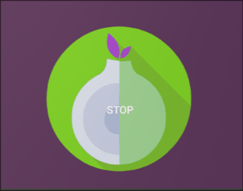

RethinkDNS
✔️ Table of Contents
I’m not affiliated with RethinkDNS in any way, I’m just a technologist and privacy advocate.
🔑 Key Terms
✔️ Click to Expand Key Terms
-
HTTP (HyperText Transfer Protocol): The standard protocol used by web browsers and servers to transfer web pages and related resources over the internet.
-
HTTPS: HTTP encrypted using TLS is often referred to as HTTPS. TLS-encrypted web traffic is by convention exchanged on port 443 by default, while unencrypted HTTP uses port 80 by default.
-
TLS (Transport Layer Security) is an encryption protocol and is the standard for enabling two networked applications or devices to exchange information privately and robustly.
-
Mixed content: is when an otherwise secure website uses resources fetched via HTTP or other insecure protocols.
-
IP (Internet Protocol): The address system of the internet that routes data packets from source to destination devices. IP operates at the network layer and does not guarantee delivery order or error checking, which is handled by TCP.
-
IP Address (Internet Protocol Address): A unique numeric label assigned to each device on a network, used to identify and locate the device for communication.
-
Subnet (Subnet Range): represents a block of IP addresses grouped together under a single rule. Instead of allowing or blocking individual IP addresses one by one, you define a subnet to include a wide range of IPs within that block.(Useful for apps that you
Isolate). -
Host: Any device connected to a network with an IP address, capable of sending and receiving data, including computers, phones, or servers.
-
Client: A device or software (often your computer or phone) that initiates requests to servers to access resources or services, forming the client-server model of communication.
-
Port: A port in networking is a virtual communication endpoint managed by a computer’s operating system that helps direct network traffic to specific apps or services. While an IP address identifies a device on a network, ports allow the system to know exactly which app or service should handle the incoming or outgoing data. Web traffic commonly uses port 80 (HTTP) or 443 (HTTPS), so when data arrives for those ports, it’s routed to the web server application on the device. When we block port 80, we block insecure HTTP connections.
-
TCP (Transmission Control Protocol) is responsible for maintaining a connection through a handshake and putting the packets in the correct order. TCP will also ask for missing pieces and is known as a reliable but slow protocol.
-
UDP (User Datagram Protocol) (UDP/IP): is a fast protocol used across the internet for time-sensitive transmissions such as DNS lookups or VoIP. UDP allows a computer to send data straight to another without requiring a handshake.
-
DNS (Domain Name System): stores domain information in a distributed database and translates domain names into IP addresses and vice versa. This enables us to only have to remember simple domain names rather than complex IP addresses.
Domain Name
ssd.eff.org | | | | | top-level domain | | | second-level domain | subdomain☝️ The hierarchy is read from right to left, the TLD is the highest-level domain (
.orghere), the second-level domain (eff) is directly to the left of the TLD, and anything further left (likessd) is a subdomain under that second-level domain.
-
DNS Server: When you search for a domain name (rethinkdns.com) it triggers a DNS lookup. Several different types of DNS servers typically work together to complete a single DNS lookup.
-
DNS Resolver: is a server or software component that translates domain names into IP addresses that devices use to communicate.
-
Unicast DNS: The traditional DNS setup where each DNS server is assigned a unique, single IP address. DNS queries from clients are directed to this specific server regardless of the clients location.
-
Anycast DNS: Anycast allows a single IP address to be used by multiple servers. In Anycast DNS, a DNS query can be answered by any one of several DNS servers, usually the one closest to the user by geographic or network proximity. This setup reduces latency, increases the availability of DNS resolution services, and offers protection against DNS flood DDoS attacks by distributing traffic across multiple servers.
-
Recursive resolver (DNS recursor): is typically the first stop in the series of the above servers.
-
Iterative resolver: In an iterative DNS query, each DNS server responds directly to the client with a referral to another server, and the client continues querying successive servers until it receives the IP address for the requested domain.
-
Proxy: A proxy, in relation to Orbot with Rethink, is an intermediary service that routes internet traffic from your device through the Tor network to provide privacy and anonymity.
-
HTTP(S) Proxy: An HTTP proxy is an intermediary server that forwards HTTP/HTTPS web traffic from a client (e.g., a browser or app) to destination servers, allowing for privacy, filtering, or routing control while masking the user’s IP. HTTP proxies only work with web traffic (HTTP/HTTPS).
-
SOCKS5 (Socket Secure 5): Is an internet proxy protocol that transfers info from one server to another while redirecting the user’s IP address. It supports both UDP and TCP and can actually improve speed in some cases.
-
pi-hole: a DNS sinkhole that protects your devices content without installing any client-side software.
-
OpenSnitch: is a GNU/Linux application firewall.
-
proxifier: a proxifier acts as a proxy client, routing specific application traffic through proxy servers without encrypting data or providing global IP masking.
-
VPN (Virtual Private Network): a VPN creates an encrypted tunnel that routes all network traffic from your device through a remote server, masking your IP address and securing your entire connection.
-
WireGuard: a modern VPN encryption protocol, its fast and has gained widespread adoption among VPN providers.
-
OpenVPN: an older, more mature VPN protocol that uses SSL/TLS for encryption. It’s known for being very reliable and highly configurable but tends to be slower and more complex than WireGuard. Good VPNs often give you the choice between protocols.
-
Bypass DNS and Firewall: Bypass the DNS and Firewall for this app, this only works with Rethink’s DNS. -
Bypass Universal: Bypass the Universal firewall for this app. -
Exclude: The app is excluded from the dns and firewall, Rethink is unaware of this app. -
Isolate: When an app is isolated, only trusted IPs are allowed. (i.e., IPs or domains you explicitly set trust rules for). -
🛜(Unmetered Wi-Fi): Wi-Fi settings, either blocked or allowed.
-
📶 (Metered mobile): Mobile data settings, either blocked or allowed.
RethinkDNS Overview
-
Bypass DNS and Firewall: Bypass the DNS and Firewall for this app, this only works with Rethink’s DNS. -
Bypass Universal: Bypass the Universal firewall for this app. -
Exclude: The app is excluded from the dns and firewall, Rethink is unaware of this app. -
Isolate: When an app is isolated, only trusted IPs are allowed. (i.e., IPs or domains you explicitly set trust rules for). -
🛜(Unmetered Wi-Fi): Wi-Fi settings, either blocked or allowed.
-
📶 (Metered mobile): Mobile data settings, either blocked or allowed.
The DNS mode routes all DNS traffic generated by all apps to any user chosen DNS-over-HTTPS, DNS-over-TLS, DNSCrypt, or Oblivious DNS-over-HTTPS resolver.
Firewalls like Rethink that block both UDP and TCP connections are usually sufficient because nearly all applications rely on these two protocols for their networking and communication. Almost every app communicates over TCP or UDP, so blocking these protocols effectively restricts most network traffic from and to apps, preventing them from connecting without permission.
I will share how I use RethinkDNS, obviously feel free to make changes based on your threat model and needs.
Different versions of the RethinkDNS have different features and capabilities. The best version in my opinion is the F-Droid version. Rather than try to cover all versions, I will only cover the F-Droid version in this guide.
Getting Started
DNS
I was surprised to see that GrapheneOS recommends that people use their own “network provided DNS servers for general purpose usage” (i.e., Your ISPs DNS). They say that “using the network-provided DNS servers is the best way to blend in with other users”. Network and web sites can fingerprint and track users based on non-default DNS configurations. –grapheneos default-dns
Given that it is a fact that many ISPs are known to share this data and do other privacy disrespecting things, I would personally rather make it harder for them. I included this because they are the experts and the choice is yours, I use a custom DNS myself. I guess since so many people virtue-signal saying that they “have nothing to hide”(a reckless, privileged notion) that not many people truly care about privacy and are likely using the default. The more people that we can convince to use privacy respecting tools, the better it is for everybody.
Recommended Resolvers:
✔️ Click to Expand recommended resolvers
These are just the providers I’ve researched personally and not in a specific order. It’s recommended to regularly test and switch between DNS providers as location and network conditions play a factor. There are DNS benchmarking tools available to either download or use in-browser.
A few examples:
-
Quad9 is known to enforce strong standards in cryptography and was the first to use DNSSEC cryptographic validation.
-
Mullvad DNS
-
NextDNS
-
Cloudflare publishes regular transparency reports and undergoes independent audits and have a great blog explaining the technology which is a major plus. GrapheneOS sets Cloudflare as the fallback due to their good privacy policy, and widespread usage.
-
RethinkDNS: Their DNS code is open source so anyone can audit it themselves. They do not collect PII nor seek to profile its users, transparency is great.
Throughout this article, I’ll be discussing the RethinkDNS Android App. We’ll later reference the DNS Blocklist configuring website, which is available at rethinkdns.com/configure.
❗ NOTE: When you switch to an encrypted DNS resolver, you are shifting your trust from your ISP’s DNS servers to the third-party DNS provider you choose. Encryption protects your DNS queries from being seen or intercepted by outsiders, like your ISP or network eavesdroppers, which improves privacy. However, the DNS resolver itself still sees all your queries and could potentially log, analyze, or misuse that data.
That said, it’s quite common for ISPs to engage in practices that compromise user privacy. Do some research, whats their business model, privacy policy, etc. Unfortunately, with a VPN you are also just shifting the trust. Don’t blindly choose a VPN either.
Configuring DNS
Configure -> DNS -> Other DNS:
-
Choose the type of resolver you want, I use DNSCrypt. Once you click you can choose the specific resolver you want such as Quad9. You may notice that it says
Failed: using fallback DNS. This is only because we haven’t turned it on yet, we will recheck this once we turn it on. -
If you want a relay in a specific country, you can click the
Relaystab. For DNSCrypt you are given the choice between the Netherlands, France, Sweden, Los Angeles, and Singapore. You might do this if you were trying to circumvent censorship.
Rules set the following:
-
Advanced DNS filtering (experimental): Assign unique IP per DNS request. -
Prompt on blocklist updates: This is for if you use Rethink’s custom blocklists. -
Prevent DNS leaks: When enabled, Rethink captures all packets on port 53 and forwards it to a user-set DNS endpoint.
Leave all the Advanced defaults unless you plan on setting up a SOCKS5 proxy,
in which case you will want to enable Configure -> DNS -> Never proxy DNS.
-
Split DNS (experimental): Forward DNS queries from proxied apps to the proxy’s DNS servers. -
Treat DNS rules as firewall rules (experimental): DNS blocking will be bypassed during resolution; the decision will be made at connection time. -
Set
Use fallback DNS as bypass: where it always uses your fallback DNS for bypassed apps, domains and IPs. -
You can also set
Use System DNS for undelgated domainswhich is generally safe to enable and useful if access to local network devices or custom internal domains is needed.
Blocklists:
This is a cool feature, similar to NextDNS if I understand correctly. Since it’s a system-wide DNS filter it applys to any app that is run through Rethink, not only your browser, every app.
Configure -> DNS -> Rethink DNS:
-
Choose between
Skywith higher uptime and a stub resolver atcloudflare.com, ORMaxwhich is more private and has its recursive resolver atfly.io. -
Choose between the preconfigured blocklists, OR Click
RDNS Plus,EDIT,ADVANCED, Search blocklists:hagezi,Multi Pro++ (HaGeZi),APPLY (RDNS PLUS) -
You can manually Check for an update to the blocklists, which you should because they are updated regularly with new identified threats. You can also enable
Prompt on blocklist update.
You can download blocklists from Configure -> DNS -> On-device blocklists, and
have them setup for any DNS upstream.
For example, if you want to use ODoH with the HAGEZI Blocklist you could:
Go to Configure -> DNS -> Other DNS, Choose ODoH with Cloudflare. Start
it.
Now in Configure -> DNS -> RULES, tap On-device blocklists, and click the
disabled logo, then click DOWNLOAD BLOCKLISTS. Once the download is complete,
you can select Configure and select ADVANCED and search for HAGEZI, choose
MULTI PRO++ and maybe oisd small, then press APPLY (ON-DEVICE).
Now any app that doesn’t bypass Rethink will use your chosen blocklists, denying access to malicious URLs.
The HAGEZI blocklists are respected for being updated frequently. There are
different levels with Ultimate (HAGEZI) being the highest.
Network
Settings explained:
-
Loopback proxy forwarder apps: Enable when you want all of your devices proxy-related traffic to also flow through Rethinks encrypted tunnel. It ensures apps that proxy DNS/HTTP/SOCKS traffic don’t leak outside the VPN.
-
Do not route Private IPs: Prevents routing traffic destined for private IP address ranges (like 192.168.x.x, 10.x.x.x) through the tunnel. Instead, this traffic goes directly over the local network or system default route. Most useful when you want devices on your local network (NAS, printers, etc.) to be reachable by apps on your phone without routing the traffic through Rethinks tunnel, improving performance and reliability of local connections but possibly reducing privacy.
-
Loopback (experimental): When enabled, this routes RethinkDNS’s own internal traffic, such as blocklist downloads, connectivity checks, and DNS queries made by the app itself, back into the encrypted tunnel through the loopback device.
Proxy
-
Do not randomize WireGuard listen port: Keep WireGuard listen ports fixed (no randomization) in Advanced mode. Enabling it makes the tunnel’s local UDP port predictable, which is useful for port-forwarding, firewall rules, and any setup where the device must be reachable on a known port.
-
Endpoint-Independent mapping: When enabled, UDP sockets maintain a fixed address and port for all destinations. Turn this on for UDP-based P2P/NAT-traversal scenarios: it keeps one stable UDP mapping for a socket across multiple destinations, improving compatibility with hole punching / ICE-style flows.
TCP / IP
-
Shorter TCP keep alive: Quickly close TCP sockets with no recent activity. Use when the device is accumulating lots of idle TCP connections and you’d rather reclaim resources quickly (and accept that some apps may need to reconnect more often).
-
Idle timeout: Close idle TCP and UDP sockets after this duration. It closes TCP/UDP sockets that have had no traffic for the configured duration, which reduces the amount of long-lived idle state your device (and the network path) has to keep around. I am testing 5 minutes now, lower is more aggressive, set it higher if you notice reconnect churn or app breakage.
| Setting | Function | When to Use |
|---|---|---|
| Loopback Proxy Forwarder Apps | Route proxy-forwarder app traffic back into Rethink VPN tunnel | When you want consistent VPN/privacy coverage for proxies |
| Do Not Route Private IPs | Avoid routing local network/private IP traffic through VPN (send directly) | To access local devices without VPN bottlenecks |
| Loopback (Experimental) | Route Rethink’s own app traffic (updates/checks) back through VPN tunnel | To fully protect app’s own DNS/blocklist traffic |
NOTE: The above settings are disabled by default because some are experimental and can easily break functionality. I have found that the settings below give the most functionality without breakage 👇️:
Configuring Networking
Configure -> Network:
-
Set
Use all available networksto ON. This enables Wifi and mobile data to be used at the same time by Rethink. (Optional, may use more battery) -
Set your IP version: The default is
IPv4, you can choose betweenIPv6 (experimental)andAuto (experimental). -
Stall on network loss: Not a full VPN kill switch, but kill-switch-like on outages: when the device has no connectivity, Rethink stalls all traffic so apps can’t keep retrying or leaking during the gap.
-
Meter mobile networks: It reduces mobile data usage by telling Android/app code that cellular is a metered link, so background transfers and heavy downloads are more likely to wait for Wi‑Fi. (Optional)
-
Connection change policy:
- Most users should leave set to Auto because it aims to react to important changes without trashing the tunnel on noisy events.
- If connectivity doesn’t recover fast on transitions: try Sensitive.
- If Rethink seems to flap/restart too often on your network: try Relaxed.
-
Choose fallback DNS: When your user-preferred DNS is not reachable, fallback DNS will used.
- In
Configure -> DNS -> ADVANCED. You can enableUse fallback DNS as bypass, which always uses fallback DNS for bypassed apps, domains, and IPs.
- In
-
I personally disable
Enable network visibility, just keep in mind that some apps may break.- “Shutting this off prevents apps from accessing all available networks, stopping them from bypassing Rethinks tunnel”. This caused issues with the browser when turned off.(Some audio/video conference apps like Zoom and Meet require this)
Configuring the Firewall
Configure -> Firewall -> Universal firewall rules and set the following to ON:
-
Block all apps when device is locked -
Block when DNS is bypassed -
Block port 80 (insecure HTTP) traffic
Optional
-
Block on metered (mobile) network: Use if you have limited data and want to do the heavy lifting with WiFi. -
Block when source app is unknown: Enable this for a stricter, ‘block unattributed traffic’ posture; if anything breaks (missing notifications / random app connectivity issues), disable it first and check logs for ‘unknown’ blocks. -
Use
Block UDP except DNS and NTPwhen the goal is to make the device behave like a “TCP-only internet client” (plus the minimum UDP needed for name resolution and time sync), which can reduce attack surface and shut down whole classes of UDP-based bypass channels. Avoid if you need UDP-heavy apps: WebRTC voice/video, many online games, some VPNs, some streaming/live calls, device discovery, and some enterprise tooling will degrade or fail when UDP is broadly blocked. -
Block all except bypassed apps and IPs: All traffic is blocked to everything except apps you’ve marked as bypassed (Bypass Universal, Bypass DNS & Firewall, Isolate) and IPs you’ve explicitly trusted/allowed. Expect breakage until bypasses are configured. If an app is “bypassed” Rethink is still able to monitor/apply app-specific rules, whereas exclude removes the app from Rethink’s control entirely (last resort).
You can get more restrictive from here, but it will take some manual intervention to get everything working correctly.
Keep your firewall rules in mind when you’re configuring per app settings. If the Universal firewall blocks all apps when the device is locked, do you want this app affected by this or do you want to let it Bypass the Universal firewall?
Turn ON DNS and Firewall
Home 🏠:
- Click the big
Startbutton on the bottom of the screen and leave it set to the defaultDNS and Firewall (default)
Now that we’ve started the DNS and Firewall, we can go back to
Configure -> DNS and ensure the provider we chose started successfully. You
can also experiment with different types of resolvers, make sure to wait for
below the chosen resolver to say Connected.
Now, all apps on your device by default allow both Wi-Fi and mobile data access through the RethinkDNS encrypted tunnel. Try some of your most used Apps to see if they function correctly.
RethinkDNS’s firewall blocks or restricts any network traffic that isn’t explicitly allowed. Although by default all apps are allowed network access, some apps require special permissions or bypasses due to their network behavior. Many apps rely on multiple external services, backend APIs, etc. that may be blocked by the firewall.
Apps that Don’t Work
I will use Reddit as an example, the process is the same for any app. Reddit’s
app and website rely on multiple third-party services and external domains
beyond just reddit.com itself.
For apps that don’t work it’s important to ensure that your Android systems
Private DNS is set to Automatic.
Home -> Apps:
Search for Reddit, click on it and the Firewall Rules For Reddit will pop up.
Since it is already allowed Unmetered and Metered connections and still
doesn’t work, we can try one setting at a time until it does work and this is
the same process for other Apps that aren’t working.
-
First, you should check your logs and see why it’s being blocked. Look at the domains involved and set trust rules for said domains. (start by trusting reddit.com). Check the logs again, add any domains that were blocked related to reddit. If it is unclear why networking still isn’t working, you can:
-
Bypass Universal, this allows it to bypass any Universal Firewall rules you have set. -
If you’re using Rethink’s DNS, you can try allowing the app to
Bypass DNS & Firewall. Try the app again, does it work? If not: -
You can also
Isolatean App, you then have to set up trust | allow rules for domains or IPs over a period of time which can take a while. You can go toAppsand search for the app in question, click on it and at the bottom of the screen you’ll seeIP Logs, andDomain Logsto help with this. -
Excludethe app. This makes RethinkDNS completely unaware of the app and is often what is required for Reddit. It is my understanding that after youExcludeReddit for example, your systems Automatic Secure DNS will pick it up.
Other Methods
Rather than watching the logs and setting trust rules over time, you could use
tools like nslookup and dig to resolve said domain and reveal IP ranges
used.
nslookup reddit.com
Server: 127.0.0.1
Address: 127.0.0.1#53
Non-authoritative answer:
Name: reddit.com
Address: 151.101.129.140
Name: reddit.com
Address: 151.101.193.140
Name: reddit.com
Address: 151.101.1.140
Name: reddit.com
Address: 151.101.65.140
Name: reddit.com
Address: 2a04:4e42::396
Name: reddit.com
Address: 2a04:4e42:600::396
Name: reddit.com
Address: 2a04:4e42:200::396
Name: reddit.com
Address: 2a04:4e42:400::396
Resolving a domain (like reddit.com) using tools like nslookup or dig
reveals multiple IPs because large services use multiple servers across CDNs and
networks for redundancy and performance.
You can then run whois on one of those IPs (e.g., whois 151.101.129.140) to
identify the subnet ranges owned by Reddit’s CDN provider (Fastly in this case),
which helps when setting up subnet range allow rules in Rethink.
✔️ Click to Expand `whois` Example Output
whois 151.101.129.140
#
# ARIN WHOIS data and services are subject to the Terms of Use
# available at: https://www.arin.net/resources/registry/whois/tou/
#
# If you see inaccuracies in the results, please report at
# https://www.arin.net/resources/registry/whois/inaccuracy_reporting/
#
# Copyright 1997-2025, American Registry for Internet Numbers, Ltd.
#
NetRange: 151.101.0.0 - 151.101.255.255
CIDR: 151.101.0.0/16
NetName: SKYCA-3
NetHandle: NET-151-101-0-0-1
Parent: RIPE-ERX-151 (NET-151-0-0-0-0)
NetType: Direct Allocation
OriginAS:
Organization: Fastly, Inc. (SKYCA-3)
RegDate: 2016-02-01
Updated: 2021-12-14
Ref: https://rdap.arin.net/registry/ip/151.101.0.0
OrgName: Fastly, Inc.
OrgId: SKYCA-3
Address: PO Box 78266
City: San Francisco
StateProv: CA
PostalCode: 94107
Country: US
RegDate: 2011-09-16
Updated: 2025-03-25
Ref: https://rdap.arin.net/registry/entity/SKYCA-3
OrgNOCHandle: FNO19-ARIN
OrgNOCName: Fastly Network Operations
OrgNOCPhone: +1-415-404-9374
OrgNOCEmail: noc@fastly.com
OrgNOCRef: https://rdap.arin.net/registry/entity/FNO19-ARIN
OrgTechHandle: FRA19-ARIN
OrgTechName: Fastly RIR Administrator
OrgTechPhone: +1-415-518-9103
OrgTechEmail: rir-admin@fastly.com
OrgTechRef: https://rdap.arin.net/registry/entity/FRA19-ARIN
OrgAbuseHandle: ABUSE4771-ARIN
OrgAbuseName: Abuse Account
OrgAbusePhone: +1-415-496-9353
OrgAbuseEmail: abuse@fastly.com
OrgAbuseRef: https://rdap.arin.net/registry/entity/ABUSE4771-ARIN
#
# ARIN WHOIS data and services are subject to the Terms of Use
# available at: https://www.arin.net/resources/registry/whois/tou/
#
# If you see inaccuracies in the results, please report at
# https://www.arin.net/resources/registry/whois/inaccuracy_reporting/
#
# Copyright 1997-2025, American Registry for Internet Numbers, Ltd.
⚠️ Use caution when setting trust rules for subnet ranges, as this grants access to all services hosted within that range, potentially including services unrelated to the one you intend to access. Best practice is to first attempt to trust the specific domain name (e.g., reddit.com), which is generally the most granular and secure method. Only consider trusting broader subnet ranges (like 151.101.0.0/16) as a last resort if domain-based rules fail to resolve connectivity issues for the intended service.
We can see that:
- The subnet range for that IP:
151.101.0.0 - 151.101.255.255(CIDR notation:151.101.0.0/16)
So as a starting point to get Reddit working we could trust the following subnet range:
-
IPv4:
151.101.0.0/16 -
This subnet covers the full range from
151.101.0.0to151.101.255.255, which includes all related IPs Reddit uses via Fastly’s CDN. -
The owning organization:
Fastly, Inc.& More…
Firefox Encrypted DNS through Rethink
First, make sure you can visit a few sites in Firefox. If you can, then your
browser traffic should be routed through the Rethink tunnel, we will check here.
If you can’t, go to Home -> Apps and search for Firefox, is networking
enabled?
RethinkDNS Settings
For the best experience routing your browser traffic through your custom endpoint (e.g., DNSCrypt) on both Wi-Fi and mobile data ensure the following are set:
- Do not turn on
Block any app not in usein the Universal firewall. After some Log digging, I found that this causes the browser to fail more often than not. Configure -> Network -> Enable network visibilityset to ON. I had experimented with turning this off and certain websites wouldn’t load when on Wi-Fi and none would load on mobile data. Turning it back on seemed to fix both with no leaks detected.
Double check that in Rethink’s Configure -> DNS -> Prevent DNS leaks is ON, as
well as the Universal Firewalls Block when DNS is bypassed ON.
Firefox Settings
In Firefox, plug
about:configinto the URL bar and scroll down tonetwork.trr.modeand change its value to3to prevent leaking DNS queries to the System resolver. Also inabout:configscroll down tomedia.peerconnection.enabled, double-click to set it to false to prevent WebRTC leaks.
IronFox no longer lets you adjust the network.trr.mode in about:config, you
adjust the trr.mode through the DNS over HTTPS settings. Set it to
Default Protection or OFF and check for dns leaks. Fennec also has issues
with setting network.trr.mode 3 and falls back to insecure methods. I would
suggest using the built in DNS over HTTPS for Fennec on max protection.
- The trade-off is that disabling WebRTC also disables any websites or apps using WebRTC for real-time communication (like video calls or chat functions) from working correctly. Wikipedia WebRTC
In Firefox Settings -> Privacy & Security, set DNS over HTTPS to
Default Protection or OFF, this enables Firefox to use RethinkDNS’s DNSCrypt
resolver or whatever you chose.
Checking for DNS Leaks
Go to:
https://dnsleaktest.com
Also crosscheck with:
https://ipleak.net
ipleak.net may show many more servers but as long as they are all related to
your resolver (i.e., WoodyNet for Quad9) you are not leaking to your ISP or
other third-parties.
For DNSCrypt with Quad9 Security, dnsleaktest found 5 servers all with the ISP
WoodyNet indicating success through Quad9. Quad9 relies on Packet Clearing
House, that’s where the WoodyNet name comes from.
When on mobile data, when going to https://dnsleaktest.com the results may
show more servers. As long as they are all the same ISP you’re good.
A different solution could be to experiment with more strict RethinkDNS settings and just use the browsers built-in DNS over HTTPS on max protection. Having more strict defaults for Rethink with all of your apps and configuring your browser separate may be a better option, the choice is yours.
When hunting down a solution you can go to Configure -> Logs, then try to
visit the site that wouldn’t work while watching the logs. You should see
Firefox pop up, click it, in the top right of the pop up should be the reason
it was blocked.
- PrivacyTests.org, tests different browsers in different privacy categories.
DuckDuckGo
I also tested DuckDuckGo with its stock configuration and dnsleaktest.com
showed that DDGs traffic was successfully tunneled through Rethink to Quad9s’
servers.
dnsleaktest.com showed all WoodyNet ISPs indicating success.
Chromium Based Browsers (Brave)
For Brave, if you want your DNS routed through Rethink you have to turn
Use secure DNS off.
I also had to set Brave to Bypass Universal
NOTE: Brave has been known to have some spyware in the past, though most of it can be opted out of.
More Fine Grained Control & Enhanced Privacy
In this section we will switch from a default allow to a default deny; blocking network access to every app. We will then go through and only enable networking for the apps that we need and trust.
✔️ Android Privacy Tips for the paranoid
If you don’t like the idea of someone forcing you to unlock your phone so they can sift through your data:
-
It’s often recommended to not use biometrics as they can be forcibly be taken from you while a password typically can’t.
-
Cellebrite relies on your phone being in AFU mode which is After first unlock.
BFU: Before First Unlock. This refers to the state right after a device restarts. Since you haven’t entered your password yet, the system has not unlocked the phone’s storage, so its contents remain encrypted.
AFU: After First Unlock. In this state, the device has been unlocked at least once since it was powered on, even if it is currently locked. The encryption keys are loaded into RAM, making the device’s stored data more accessible and increasing the potential attack surface compared to the BFU state.
-
Set the Auto optimization (Auto Restart) to the shortest amount of time possible. When your phone first reboots it is in BFU mode which is Before first unlock mode. Biometrics are usually disabled in this mode and the encryption keys are not saved in RAM making the attack surface much smaller.(i.e., they typically have to guess the password or brute-force it)
- That said, if someone gets your phone while it’s in AFU mode they will only have the amount of time until your next auto reboot to try to extract your data.
-
You can also try to reduce the number of unlock attempts before the device wipes. The default is typically 20 attempts, I haven’t found a way to lower this.
-
You can’t really trust Airplane mode on anything but GrapheneOS. If you are able to remove your battery, do that when it matters.
-
In your
About phonesection, name your device something that doesn’t expose anything useful about yourself. -
Set a pin for your phones sim card to prevent sim swaps.
-
Consider something like mint mobile or visible, they often let you register with only a spoofed email address.
Bluetooth is inherently insecure and broadcasts information about your device constantly. Walmart and other stores have started using Bluetooth to see hot zones to strategically place adds on the most traveled areas.
-
Turn off Wi-Fi, Bluetooth, Location, Nearby device scanning, etc. when not in use or needed. Your weather app doesn’t need your location 24/7, find one that lets you manually enter your location and time zone.
-
Use a password manager rather than using the one built into the browser, I like BitWarden for sync and KeepassDX for self storage. Since you don’t have to remember the passwords, have it generate long complex unique passwords for each app.
- You can use KeepassDX to store a complex password for Bitwarden that is kept 100% offline so your synced passwords are better protected.
In Settings -> Google in
Google services -> All services -> Privacy & security Select Ads and either
Reset advertising ID every so often, or Delete advertising ID but know the
consequences of the latter.
In the same All services area, click Usage & diagnostics to disable it.
Turn off Improve Location Accuracy
Go to your accounts Manage your Google Account, Data & privacy and disable
all the Activity tracking (Pause it or turn it off).
If you rely on Google services, in the Data & privacy section, it is helpful
to run a Privacy Checkup.
When you’re done, always go to Settings -> Accounts and backup and remove the
Google account.
I recommended that you remove Android System SafetyCore.
F-Droid
F-Droid is a free and open-source app store for Android that only distributes open-source software, without ads, proprietary code, or user tracking. All apps are vetted for privacy and transparency, making it a strong alternative to Google Play.
No registration or account is required, further protecting privacy.
Google restricts apps that remove Google services or modify their core features to disable their data collection strategies. This is why you won’t find many privacy by default browsers in Google Play. Browsers like IronFox and Cromite are solid options that disable telemetry and more that are available outside of the Play ecosystem.
I personally use IronFox as my default and have been happy with it so far. It comes with uBlock installed by default which I recommend that you learn how to get the most out of. With Firefox fingerprint protection, a few about:config tweaks, and uBlock you can accomplish what used to take 6 extensions to do. See: uBlock Origin
For more compartmentalization, Brave Browser now has an F-Droid repository that can be added.
Open F-Droid, in Settings click Repositories, click +, and for the Brave official repository add the following:
NOTE: If you don’t want to add a repo, you can use the FFUpdater app to install privacy friendly browsers including brave.
https://brave-browser-apk-release.s3.brave.com/fdroid/repo
Or you can visit https://brave-browser-apk-release.s3.brave.com/fdroid/repo/index.html and scan the QR code.
Another app that I recently discovered on F-Droid is the FFUpdater app. It enables you to install and update different privacy friendly browsers as well as updating FairEmail, K-9 Mail/Thunderbird, and Orbot in a privacy respecting way.
-
FairEmail is great, it has many privacy features including support for encryption,reformatting messages to prevent phishing, and more.
-
To install apps through FFUpdater tap the phone logo with the down arrow on the top right of the screen.
Aurora Store is an open-source client for Google Play that respects user privacy and lets you download and update proprietary apps with an anonymous account. You can use F-Droid for open-source apps and Aurora for proprietary apps.
I would recommend against Obtainium, the dev is a piece of shit and you can do anything it can do easily without it. Discoverium is a fork run by someone else, might be an option.
Another option I came across that I haven’t tried yet is Zapstore It’s a decentralized, permissionless app store that lets you support devs without PII.
Share Files and more anonymously:
Sharing Images:
- Clean metadata before sharing pics, I personally use Metadata Remover
Default Search Engines
Startpage: Advertised as the world’s most private search engine. “Startpage delivers Google search results via their proprietary personal data protection technology.”
-
To add Startpage as a search engine, add
https://www.startpage.com/sp/search?query=%s.
SearXNG
❗️ NOTE: SearXNGs google results are not working as of 11-17-25 and haven’t for a while now leading to bad results being returned for most instances. It’s my understanding this is because Google is actively blocking automated requests from SearXNG. Devs sometimes publish patches or workarounds, but these are quickly blocked when Google changes their back-end.
While we’re on the topic of browsers, it’s worth considering a privacy-focused metasearch engine like SearXNG. SearXNG anonymizes your search queries and removes any identifying data before passing them along to Google or other search engines. This way, you can receive top-quality search results while keeping your privacy intact
To get started find a few local instances and others and either bookmark them for quick access or do what I do and add them to use as your default search engine.
In Firefox go to about:preferences#search, scroll to the bottom and click
Add. Name it whatever you want and for the URL add one of the local instances
followed by search?q=%s for example, for an instance in the US with A+
ratings:
https://searx.ankha.ac/search?q=%s
Then click Add Engine, and back near the top of the page you can set one
instance as your default search engine and another for private windows. I have
had a good experience so far using SearXNG with the occasional problem that is
solved by using a different instance.
❗️ Note: When using a public SearXNG instance from someone you don’t know, you are trusting the operator since they can see the IP address making the searches and might keep logs. The site https://searx.space/ provides helpful details to choose instances based on trust and location. If you want the highest level of privacy and full control, running your own instance is the best option—though it requires more setup. Using public instances is a great way to get started and improve privacy compared to regular search engines.
Browser compartmentalization is a technique where you use multiple browsers to separate different types of online activities. Instead of doing all browsing in a single browser, you dedicate specific browsers to distinct tasks, for example, one browser for email and banking, another for social media, and a third for casual web surfing. This separation makes it difficult for websites and trackers to link your activities across different contexts because cookies, trackers, and browsing data are isolated within each browser.
- AI and social media Apps often require extensive permissions and deep access to your device data and can run background processes that you can’t easily monitor. If you avoid the apps and only access AI and social media in your browser you get the benefits of browser sandboxing, tracking prevention, cookie controls and more. You gain more benefits by using the compartmentalization technique explained above, possibly one for AI and one for social media.
The following website lists the tracking protection mechanisms implemented by the major browsers and browser engines:
✔️ uBlock Guide
uBlock Origin
Arkenfox and Betterfox are JavaScript configuration files used to harden/control Firefox settings on a computer.
BetterFox does a great job explaining how to use uBlock with solid recommendations.
If you wanted to apply the
Privacy Essentials
list you would click
subscribe,
which launches the uBlock asset viewer where you can see all of the domains that
will be blocked before clicking Subscribe again to apply them.
Adding other lists
Click the uBlock logo, Settings, Filter lists, scroll to the bottom and choose Import…, Paste the url of your chosen list, and click Apply changes.
For example, Arkenfox suggests adding the Actually Legitimate URL Shortener Tool. Add https://raw.githubusercontent.com/DandelionSprout/adfilt/master/LegitimateURLShortener.txt to the Import… section and click Apply changes. If you scroll up, you’ll see that it was added and chosen.
Setup your Blocking mode
Many opt for medium mode. To do so you need to:
Settings pane:
- Open the dashboard, and choose I am an advanced user.
Filter lists pane:
-
All of uBO’s filter lists: checked
-
EasyList: checked
-
Peter Lowe’s Ad server list: checked
-
EasyPrivacy: checked
-
Online Malicious URL Blocklist: checked
My rules pane (4th pane from the left):
Underneath Temporary rules add, you literally type this in:
-
Add
* * 3p-script block -
Add
* * 3p-frame block -
Click
Save -
Click
<- Commit(Not required on phone) -
Setting medium mode on your phone is likely overkill because it’s not super quick to switch broken sites to easy mode as it is on a computer.
Fallback to easy mode
Click the uBlock logo while on the site you want to use easy mode on. You’ll see the power button to the top right, the Global rules and the Local rules which start 3 boxes from the left. Click the box under the Local rules for 3rd-party scripts. The box will change colors, dark gray = NOOP (No Operation). This tells uBO to ignore the aggressive global block for this site, and let the normal filter lists handle the blocking.
Click the padlock to make the rules NOOP rules permanent.
You can also disable JavaScript in Settings as needed replacing the need for NoScript.
Default Deny
If you read the following GrapheneOS discussion forum written by an RDNS dev:
The post suggests you go to Home -> Apps and right under Showing all apps
click on the grayed out 🛜📶 to set a rule to block both Metered and Unmetered
connections to all apps by default. This will block both Wi-Fi and mobile data
connections to all apps on your device.
The point here is that not every App on your device needs network access all the time or at all in some cases.
Search for the apps you use/trust and:
-
start by enabling Wi-Fi 🛜 and mobile-data 📶 as well as Bypass Universal so your required apps aren’t blocked right when the screen shuts off or affected by the firewall.
-
Next, check your logs and see why it’s being blocked. Look at the domains involved and set trust rules for said domains. If it is unclear why networking still isn’t working, you can:
-
If you’re using Rethink’s DNS, you can try allowing the app to
Bypass DNS & Firewall. Try the app again, does it work? If not: -
You can also
Isolatean App, you then have to set up trust | allow rules for domains or IPs over a period of time which can take a while. -
Excludethe app. This makes RethinkDNS completely unaware of the app and is often what is required for Reddit. It is my understanding that after youExcludean App, your systems Automatic Secure DNS will pick it up.
A few apps that typically need network access on Android:
-
Google Play services (
com.google.android.gms): push notifications, safety checks, etc. -
Google Play Store (
com.android.vending) app updates and downloads -
Android System (usually UID 1000, often
androidorsystem): Core OS connectivity checks, NTP time sync, and network management. Blocking can cause “no internet” errors. -
Android System WebView (
com.google.android.webview): Renders web contents in apps. -
Download Manager (
com.android.providers.downloads): Manages file downloads from apps/browser. Without it, downloads stall. -
Media Storage
-
Settings
Tor
Tor itself is a network and software that anonymizes traffic by encrypting it and bouncing it though a series of volunteer-operated relays around the world before reaching the destination. Orbot uses this Tor network to encrypt and anonymize internet traffic for Android apps.
Orbot routes app traffic through Tor but doesn’t provide the same kind of traffic isolation and sandboxing that Tor browser offers on desktop. Be aware of the limitations and use Tor Browser on a hardened system or specialized software such as Tails or Whonix when anonymity truly matters.
If you want to learn how Tor works, I suggest reading the following in this order:
Tor is at risk, and needs our help. Despite its strength and history, Tor isn’t safe from the same attacks oppressive regimes and misinformed legislators direct at encryption and many other privacy-enhancing technologies.–How to Support Tor
✔️ Click to Expand Tor Section
❗️ WARNING: Tor gets much of its funding from the US government and is not immune to vulnerabilities or misconfigurations.Tor Browser is not the most secure browser, anonymity and security can often be at odds with each other. Having the exact same browser as many other people isn’t the best security practice, but it is great for anonymity. Tor is also based on Firefox Esr, which only receives patches for vulnerabilities considered Critical or High which can be taken advantage of.
Tor Project has also done some sketchy/questionable things lately such as removing user agent spoofing which made every user appear as if they were using the same version of Windows. This decision reduces anonymity and is questionable at best, seems to me there ought to be a very good reason for doing this which I can’t find. Tor is still one of the best anonymity solutions, just stay informed and cautious.
The following is a summary of some of the Tor Overview, all credit goes to them. It is important to spread the word when you can!
If you are fortunate to live outside of oppressive regimes with extreme censorship, using Tor for every day, mundane activities is likely safe and won’t put you on any harmful “list.” Even if it did, you’d be in good company, these lists mostly contain great people working tirelessly to defend human rights and online privacy worldwide.
By using Tor regularly for ordinary browsing, you help strengthen the network, making it more robust and anonymous for everyone. This collective support makes staying private easier for activists, journalists, and anyone facing online surveillance or censorship. The writer of the PrivacyGuides article mentions using Tor when he needs to access Google Maps to protect his privacy
So, consider embracing Tor not only for sensitive browsing but also for daily routine tasks. Every user adds valuable noise to the network, helping protect privacy and freedom for all.
Setting up Orbot with a TCP-only Proxy

- Helpful guide, What is Orbot?
TCP-Only Proxies forward all TCP-level connections from selected apps to Orbot.
TCP-Only Proxies work best for Apps that use multiple TCP protocols beyond just basic web browsing (HTTP/HTTPS) like messaging apps (Signal), search apps (DDG), etc. Because it proxies all TCP traffic, it can cause some apps to slow down or break if they expect direct DNS or UDP.
First install Orbot, Open Orbot -> More -> Orbot Settings and turn on
Power User Mode. This is important, if you forget this Rethinks auto Orbot
will not let you choose between SOCKS and HTTP proxies.
You should also check Allow Background Starts ON.
In Configure -> Proxy -> Setup Orbot:
-
Click
Add / Remove 0 apps, search for an app that you want to run through Orbot. For simple testing I chose DuckDuckGo with a TCP-only Proxy. -
In
Home -> Appssearch forOrbotand setOrbot -> Bypass UniversalON -
On the first time starting Orbot through Rethink, you’ll have to click the
Configure -> Proxy -> Setup Orbot -> Orbot>toConnectas well as grant initial permissions. After you start Orbot successfully, check out RethinksHomeand below the STOP button should sayProtected With Tor.
Open DuckDuckGo and go to:
https://dnsleaktest.com
# CrossCheck
https://ipcheck.net
❗ You may see that ipleaktest initially shows a Tor exit relay location such as the Netherlands, once you complete a Standard Test, it still shows WoodyNet ISPs. Since I configured Rethink to use DNSCrypt with Quad9 this is completely expected. This confirms that my DNS traffic is not leaking to my ISP and is properly anonymized through Tor and Quad9. As long as you don’t see your actual ISP’s servers in the results, your setup is working as intended.
Now you can add more apps that would benefit from anonymity such as FairEmail, RSS feeds, and crypto wallets. I believe for Signal, it requires that you to set up the SOCKS5 proxy to work correctly which is pretty straightforward.
Look into an RSS Feed, they give you complete control of the content you consume, no algorithm involved!
This can also be useful on public Wi-Fi or other insecure networks.
-
You can also open Orbot and
Choose How to Connect, if you want to hide Tor use. -
If you live in an area where Tor use isn’t discriminated against, consider Activating your Orbot
Kindnesstab so others that are in oppressive regimes can use your device as a bridge. This is a great way to give back!
Setting up a SOCKS5 Proxy
If you have Orbot set up through auto mode, you’ll have to disable it.
Open Orbot -> More: Near the bottom of the screen you’ll see HTTP: 8118, and
SOCKS: 9050, these are the Port numbers. We will compare these to Rethinks
defaults. (They match).
Back in Rethink, Configure -> Proxy -> Setup SOCKS5 Proxy.
In the App dropdown choose Orbot.
-
Hostname:
127.0.0.1 -
Port Number:
9050 -
Leave the rest of the defaults and Hit
Set -
Go
Home, below the STOP button you should seeProtected With SOCKS Proxy. Now all of your devices traffic that doesn’t bypass Rethink is routed through the SOCKS5 proxy. -
In
Configure -> DNSand turnNever proxy DNSON -
Open your browser and visit
https://dnsleaktest.com, your public IP should no longer be your ISPs. -
SOCKS5 alone doesn’t encrypt the traffic; it only proxies or routes it. Orbot uses SOCKS5 to let apps route traffic into the Tor network. Once inside the Tor network, the traffic is encrypted in layers.
-
There is a misconception that Orbot is a “free VPN”. It’s actually part of an anonymity network designed to hide your identity by sending your traffic through multiple servers. And the SOCKS5 proxy that Orbot uses isn’t a VPN either, it simply directs certain app traffic through a proxy server without creating a full encrypted tunnel from your device like a VPN does.
WireGuard/VPN
Keep your goals in mind before paying for a VPN, some allow you to pay with cash anonymously such as Mullvad VPN and a few others. Remember that you are transferring trust, from your ISP to the VPN provider.
Configure -> Proxy -> Setup WireGuard -> +:
With the WireGuard protocol, the provider usually gives you either a QR Code, or
a configuration file (e.g., .conf file) which is a plaintext file that
contains what is needed. You download that file and Click IMPORT which brings
up your phones filesystem.
Alternatively, the CREATE option for advanced users who are setting up their
own WireGuard network, typically if you host your own VPN server.
After this is setup you should always verify that your traffic is encrypted (hidden IP) and your DNS queries are protected (no leaks).
You could:
-
First check what your IP address is before enabling WireGuard at
whatismyipaddress.comoripleak.net, take note of your Public IP, ISP, and City/Country this is your real info that the VPN needs to hide. -
Connect to your Wireguard/VPN server. Choose the server location you want and go back to check again.
-
Check for leaks, go to
dnsleaktest.comand run a Standard test. If you don’t see your Public IP listed anywhere, you don’t have a leak.
Fixing DNS Leaks:
-
Use WireGuard in Simple mode.
-
Or, use
Configure -> DNS -> Split DNSwith WireGuard inAdvanved + Lockdownmode (if running on Android 12+)
To ensure your DNS requests go through your VPN, check
Configure -> Logs -> DNS. Tap on the entries that appear there, which should
bring up a bottomsheet with more info about the request and how it was handled.
Requests handled by WireGuard are shown with sub-text “resolved x min ago by
wg…” –celzero
Proton VPN
This works for ProtonVPN Free as well.
Written by celzero Here
-
On your Android, visit https://account.protonvpn.com/downloads
-
Scroll to WireGuard
-
Give it a name
-
Select Android
-
Enable VPN options as needed.
-
Press Create or tap on Download.
- Open Rethink, goto Configure -> Proxy -> Setup WireGuard
-
Tap on the “+” button
-
Choose Import
-
Select the downloaded configuration file
-
If the import is successful, you should see a new profile prefixed wg added to the list.
-
Tap on that
wgentry.
-
In the new screen that opens up, tap on Add / Remove applications.
-
Select apps that should be part of this particular WireGuard profile.
-
Go back.
- Enable / disable that wg profile as desirable.
- On my phone, when I saved the VPN profile, it automatically added
.txtto the end of the file causing the import to fail. I was able to open my phones documents and long hold the file to rename it, afterwards I was able import it.
SIMPLE
When you enable: Configure -> Proxy -> Setup WireGuard - SIMPLE
All connections from all apps, including DNS, will be routed to a single, active WireGuard VPN. Other active WireGuard VPNs, if any, will be stopped.
If you tap SIMPLE, you can see the name of your VPN, check your Logs, and see your Peer connection.(your device that participates in the VPN network)
ADVANCED
Same as above but tap ADVANCED before enabling the toggle. This lets you
choose which apps will be routed through the VPN while the rest are routed as
usual.
This Mode also lets you enable:
-
Lockdown: Selected apps will only be routed through this WireGuard VPN, regardless of whether the VPN is active or disabled.
-
Always-on: All connections and apps not routed by other WireGuard VPNs will be routed by this one.
-
Mobile only: Use this WireGuard exclusively over mobile data.
After you configure your Advanced settings as needed, enable the toggle.
Always make sure to watch your Logs as well as test with something like <dnsleaktest.com>, you shouldn’t see your actual Public IP anywhere. It’s advisable to check for WebRTC Leaks as well if you have that enabled.
Troubleshooting VPN issues
There are a few Proxy settings in Configure -> Network -> PROXY, where you
can:
-
Enable
Do not randomize WireGuard listen port: Keep WireGuard listen ports fixed (no randomization) in Advanced mode. -
Enable
Endpoint-Independent mapping: When enabled, UDP sockets maintain a fixed address and port for all destinations.
Check your Logs
In Configure -> Proxy -> Setup WireGuard, click on your VPN which will give
you access to the LOGS.
Click the top entry, it will bring up the IP address and domain and show your rules the app. You can click the dropdown menu’s to set new Universal Firewall rules, as well as block/trust rules for IPs and domains.
Logs
On-device logging is on by default. You can find it in Configure -> Settings.
From there, you can set the log level and choose a notification action.
If anyone else uses your phone, it’s probably a good idea to enable app lock.
Go to Configure -> Logs, and try to access the app that’s not working. You
should see said app at the top of the Network Logs, click it. In the top right
of the tab, you’ll see the reason why it’s not working such as: App Blocked,
or DNS Bypass.
This DNS Bypass means that the App in question is trying to bypass the Rethink
Tunnel and being actively blocked. You can search for said app and try setting
IP or Port Trust rules.
You can also go to Home -> Apps and search for the App you need, click on it
and at the bottom of the screen you will see IP Logs, and Domain Logs.
Once you click on the log of the app in question, you’ll be given 3 drop down options. If you set an app to Bypass DNS and Firewall settings, you will see that in the first dropdown box.
The next drop down is Block,trust this IP for this app where you can set a
rule to Block or Trust.
Resources
✔️ Click to Expand Resources
Things change frequently in the privacy/security relm, many sites provide an RSS feed that automatically updates when they post new content. I’ve listed a few feeds that are good to follow IMO.
RSS (Really Simple Syndication) is a technology that delivers automatic updates from your favorite websites, blogs, or podcasts in a standardized format. It saves you time by eliminating the need to manually check for new content. Best of all, your feed includes only what you choose—no algorithms deciding what you see.
I personally use Feeder as my RSS reader, it’s open-source and has been great IMO.
RSS Feeds:
With Feeder, you click the 3 dots in the top right and click + Add feed, you can then type the regular address of a site & if it has RSS feeds, Feeder will list them. Most sites that have an RSS feed will have an orange RSS button that you can click on to get the address.
-
PrivacyTools: https://www.privacytools.io/guides/rss.xml
-
Darknet Diaries: https://podcast.darknetdiaries.com/
-
Hacker News: https://news.ycombinator.com/rss
-
PrivacyGuides: https://privacyguides.org/rss/
-
Tor Project blog: https://blog.torproject.org/feed.xml
-
Mozilla Security Blog: https://blog.mozilla.org/security/feed/
-
F-Droid Forum - Latest posts: https://forum.f-droid.org/posts.rss
-
Opensource.com: https://opensource.com/feed
-
DuckDuckGo Blog: https://spreadprivacy.com/rss/
-
Electronic Frontier Foundation Deeplinks Blog: https://www.eff.org/rss/updates.xml
-
KrebsonSecurity: https://krebsonsecurity.com/feed/
-
Arkenfox recent commits: https://github.com/arkenfox/user.js/commits/master.atom
-
Arkenfox release notes: https://github.com/arkenfox/user.js/releases.atom
-
Brave Blog: https://brave.com/blog/index.xml
-
Ars Technica: https://feeds.arstechnica.com/arstechnica/index/
-
PrivacySavvy: https://privacysavvy.com/feed/
- PrivacySavvy Security Archive: https://privacysavvy.com/security/feed/
-
Orbot is a free app from the Guardian Project that empowers other apps on your device to use the internet more securely. Orbot uses Tor to encrypt your internet traffic and hide it by bouncing through a seris of computers around the world. –TorProject Orbot
-
WireGuard is an extremely simple yet fast and modern VPN that utilizes state-of-the-art cryptography. –Wireguard.com